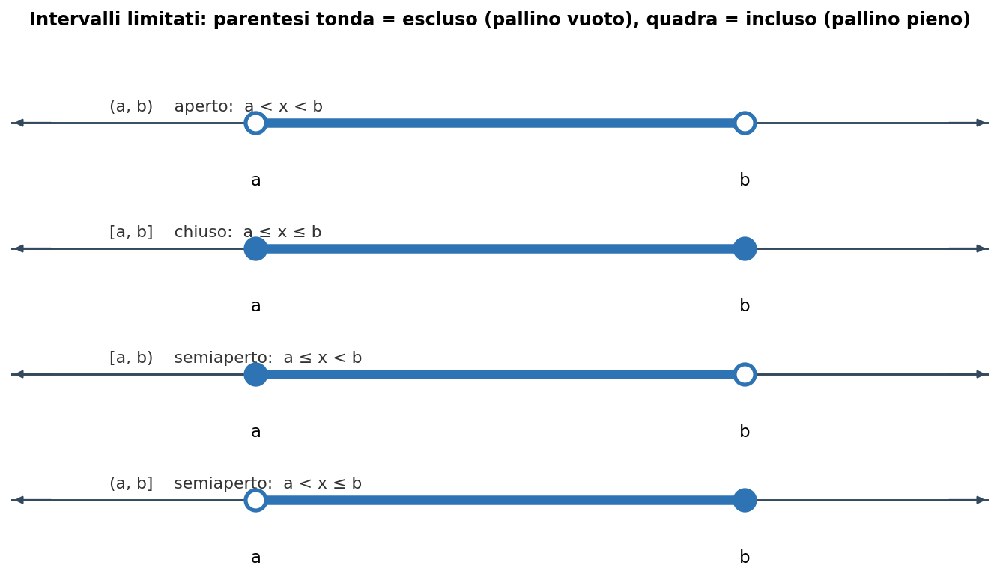
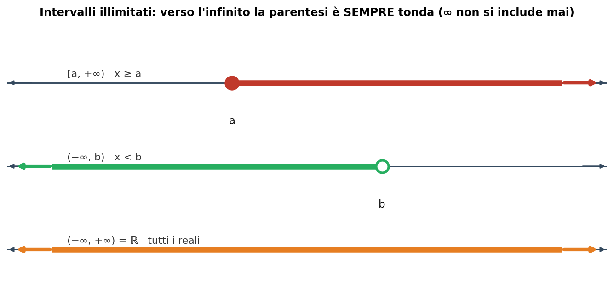
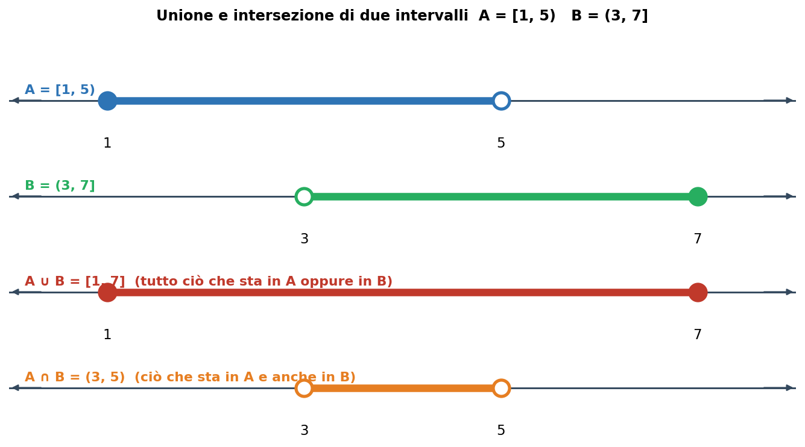

Blocco Fondamenti del programma di Udine (MATH-03/A). Gli intervalli sono il modo standard per scrivere “insiemi di numeri” sulla retta reale: servono per i domini delle funzioni, per le soluzioni delle disequazioni e per dire dove vale una certa condizione. È la prima cosa da fissare.
1. Gli insiemi numerici
I numeri si organizzano in famiglie via via più ampie:
ℕ (naturali): 0, 1, 2, 3, … — per contare.
ℤ (interi): …, −2, −1, 0, 1, 2, … — aggiungono i negativi.
ℚ (razionali): tutte le frazioni a/b — aggiungono le parti decimali che finiscono o si ripetono.
ℝ (reali): tutti i punti della retta, comprese √2, π, e — è l'insieme in cui lavora l'Analisi 1.
I numeri reali si immaginano come una retta continua: ogni punto è un numero, ogni numero un punto. Un intervallo è semplicemente un “pezzo” di questa retta.
2. Intervalli limitati: la regola delle parentesi
Un intervallo limitato è il tratto di retta compreso tra due estremi a e b. La cosa da capire è se gli estremi sono inclusi o no, e qui entra la regola delle parentesi:
Parentesi TONDA ( ) = estremo ESCLUSO → disuguaglianza stretta (< oppure >) → sul grafico pallino VUOTO.
Parentesi QUADRA [ ] = estremo INCLUSO → disuguaglianza larga (≤ oppure ≥) → sul grafico pallino PIENO.
Fig. 1 — I quattro intervalli limitati. La tonda esclude l'estremo (pallino vuo

to), la quadra lo include (pallino pieno).Esempio. [2, 6) è l'insieme dei numeri x tali che 2 ≤ x < 6: il 2 è compreso, il 6 no.
3. Intervalli illimitati (verso l'infinito)
Quando l'intervallo non ha un estremo da una parte, si usa il simbolo di infinito. Regola d'oro: verso ±∞ la parentesi è SEMPRE tonda, perché l'infinito non è un numero e non può mai essere “incluso”.

Fig. 2 — Intervalli illimitati: una semiretta verso +∞ o −∞, e l'intera retta reale ℝ = (−∞, +∞).
Esempi. [3, +∞) sono i numeri x ≥ 3; (−∞, 5) sono i numeri x < 5; (−∞, +∞) è tutto ℝ.
4. Le tre scritture equivalenti
Lo stesso insieme si può scrivere in tre modi: come intervallo, come disuguaglianza, o come insieme. Sapere passare dall'uno all'altro è essenziale.
| Intervallo | Disuguaglianza | Insieme | Estremi |
|---|---|---|---|
| (a, b) | a < x < b | { x ∈ ℝ : a < x < b } | esclusi |
| [a, b] | a ≤ x ≤ b | { x ∈ ℝ : a ≤ x ≤ b } | inclusi |
| [a, b) | a ≤ x < b | { x ∈ ℝ : a ≤ x < b } | a sì, b no |
| (a, b] | a < x ≤ b | { x ∈ ℝ : a < x ≤ b } | a no, b sì |
| [a, +∞) | x ≥ a | { x ∈ ℝ : x ≥ a } | a incluso |
| (−∞, b) | x < b | { x ∈ ℝ : x < b } | b escluso |
La scrittura { x ∈ ℝ : … } si legge “l'insieme degli x reali tali che …”: i due punti significano “tali che”.
5. Unione e intersezione di intervalli
Spesso una condizione produce due o più intervalli da combinare:
Unione (A ∪ B): tutto ciò che sta in A OPPURE in B (si mettono insieme i pezzi).
Intersezione (A ∩ B): solo ciò che sta in A E ANCHE in B (la parte in comune).

Fig. 3 — Con A = [1, 5) e B = (3, 7]: l'unione è [1, 7], l'intersezione è (3, 5).
Attenzione agli estremi. Nell'intersezione (3, 5): il 3 resta escluso (lo era in B) e il 5 resta escluso (lo era in A). L'estremo è incluso solo se lo è in entrambi gli intervalli.
6. A cosa serve
Dominio delle funzioni (Lezione 2): il risultato si scrive quasi sempre come intervallo o unione di intervalli. Es.: dominio di 1/(x−2) è (−∞, 2) ∪ (2, +∞).
Soluzioni delle disequazioni: la risposta è un intervallo (es.: x² < 4 dà −2 < x < 2, cioè (−2, 2)).
Studio di funzione: gli intervalli di crescita/decrescita (Lezione 4) si scrivono con questa notazione.
Esempio svolto completo
Scrivere in tutti i modi l'insieme dei numeri maggiori o uguali a −1 e minori di 4.
A parole: da −1 (incluso) fino a 4 (escluso).
Disuguaglianza: −1 ≤ x < 4.
Intervallo: [−1, 4).
Insieme: { x ∈ ℝ : −1 ≤ x < 4 }.
Grafico: pallino pieno in −1, pallino vuoto in 4, segmento in mezzo.
Errori tipici da evitare
Scrivere ∞ con la parentesi quadra, es. [3, +∞]: sbagliato, l'infinito vuole sempre la tonda → [3, +∞).
Confondere ( con [ : cambia il significato (estremo escluso vs incluso).
Nell'intersezione, includere un estremo che era escluso in uno dei due intervalli.
Invertire gli estremi: si scrive sempre prima il più piccolo, poi il più grande (es. (2, 6), non (6, 2)).